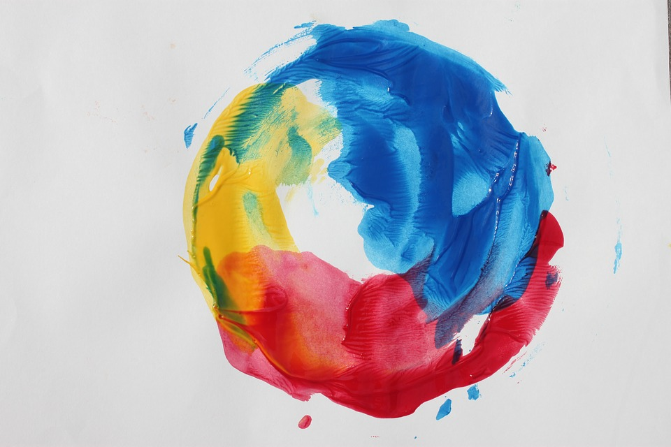

baller status, always.
My favorite colors are sky blue, yellow, and red. I love these three colors because they remind me of the summer and brighten up my day. Yellow is like the sun/daisies, blue is the sky, and red is a color that stands out and grabs attention, which i think is very cool:)
